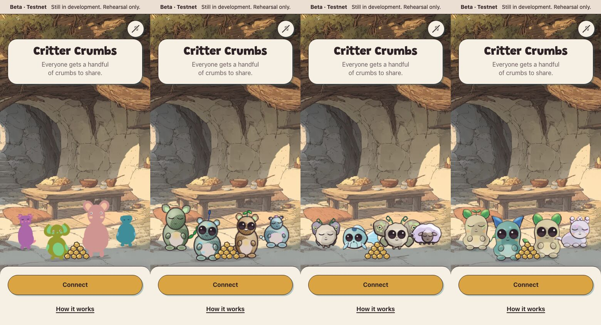
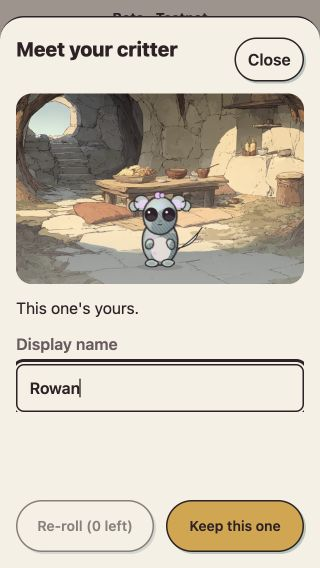
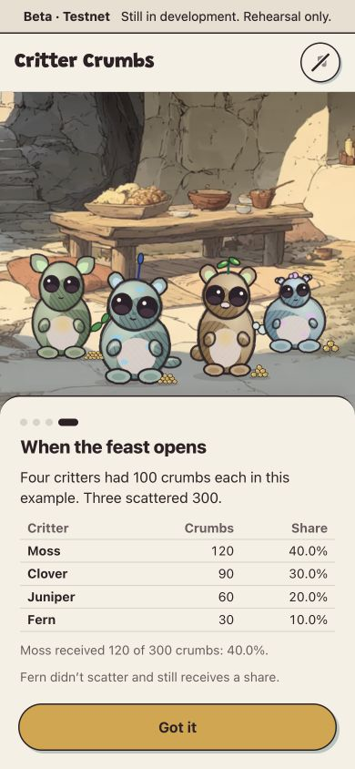

16 October 2026 · Local review · Critter Crumbs
Critters, scenes and sound
Painted Garden Spirits, eight species, portraits first, and opt-in migration are chosen. The eight-species refinement is ready to review through an explicit app preview switch. Scene and first-meeting improvements are implemented locally. Music candidates are ready to compare by listening.
Production still selects v1 critters. Development ordinarily selects v2. Versioned identity storage is prepared locally; personal adoption and music playback changes remain pending.
Refined art ready for reviewThe critter choices
Review the refined eight-species package · Evidence and rollback instructions
The comparison uses the same addresses and variants throughout. Afolabi chose Garden Spirits with the Painted Companions’ softer finish. Claude’s refinement brief covers individual variation, small faces, scene composition, expressions and measured rendering performance. Finished art remains for review.

Left to right: production v1, faithful v2, Garden Spirits, Painted Companions. The recommended hybrid finish has its own comparisons in the full gallery.
Same seed, different direction
Faces at list sizes, full bodies, silhouettes, eight- and ten-critter groups, sleep and receiving a crumb.
Open the critter galleryHow they sit in the game
Phone and desktop launcher, scattering and results comparisons, with the exact draws and known limitations.
Read the design recordConsistent rooms and clearer first steps
The tutorial keeps the launcher's room scale and floor anchors. Its four steps cover equal handfuls, practice scattering, privacy, and a worked feast result. On phones the actions stay pinned while longer content scrolls inside the sheet.
One first meeting
Meet and reroll your critter while entering a name. Keeping saves both together. Existing locks, ENS names and invite destinations are preserved.

A result you can follow
Four critters had 100 crumbs each; three scattered. The actual tally returns 120, 90, 60 and 30 out of 300. Fern receives a share despite not scattering.

Composition values and reference comparisons · Static design proposals · Verification and current captures
Development captures use v2. The verification record also distinguishes production-parity v1. New creature designs are reviewed separately above.
Listening review pendingCompare the music seams
All four tracks have today’s repeat, a proposed phrase-aligned loop and an alternative, with three repeat boundaries each. The candidates use the existing tracks and short per-track fades. The measurements support the comparison; they do not establish that a seam sounds right.
Open the listening page Read the loop analysis
The auditions and their source hashes are preserved inside this checkout. No paid generation, new compositions or playback changes were made.
Decisions and remaining review
Art integration still needs independent generator vectors, rendering from stored versions, appropriate face/hover anchors and measured rendering performance. Existing locks and reroll counts are preserved. The selected art is not enabled in production.